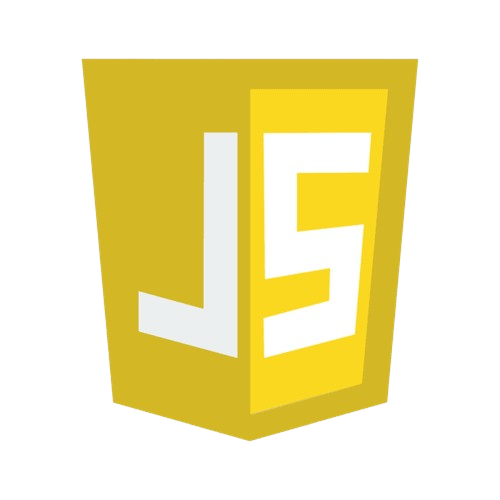

Készségek
HTML
A HTML iránti szeretetem az általános iskolás éveimig nyúlik vissza. Azóta rendszeresen használom.
CSS
A CSS ismerete egy nagyon meghatározó kézség számomra. Amit elképzelek, le tudom designolni.

JAVASCRIPT
A JavaScript ismerete nem csak funkció, hanem funkciót lehet belőle csinálni. Az alkotó élvezi, a gép számol.
PYTHON
A PYTHON a legnépszerűbb, miért ne tanulhatnám meg én is? Meg is tanultam, profi szinten programozok.
C#
A LUA nyelvvel való dolgozás lehetne könnyebb is... Bár, akkor ki alkotná meg a komplex játékmechanikákat?
SQL
Minden adatbázis-lekérdezésem egy romantikus utazás. A hold némán átkarol emlékszem csillagos este volt.